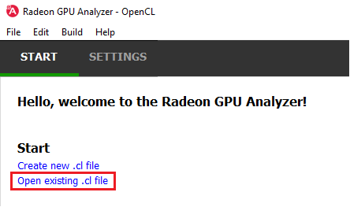
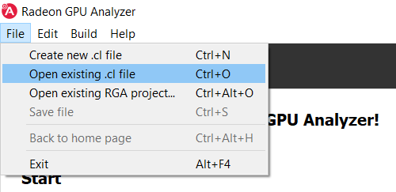
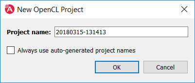
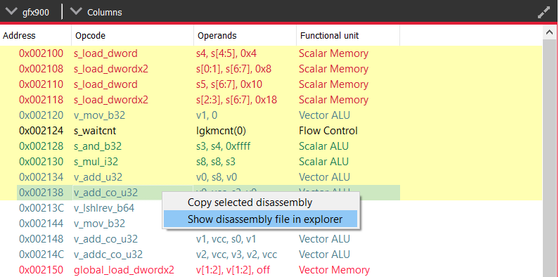
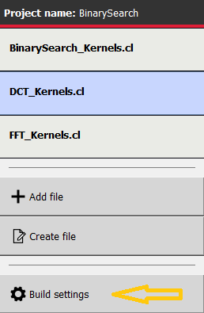

Help Manual¶
The Home Page¶
At the top of the home page, you will find two tabs:
Start Tab¶
From the Start tab, you can create a new project or load an existing project.
Creating a Project¶
RGA Project is a vehicle that can contain any number of OpenCL™ source files (.cl), together with a set of build settings. When you build the project, the OpenCL™ source files are being compiled and linked together into a single HSA Code Object binary.
RGA will automatically create for you the project when you add or create a file in the Home Page.
To add an existing .cl source file, use Ctrl+O or click on “Open existing .cl file” under the Start section:
You can also do this by clicking on File -> “Open existing .cl file”:
In a similar way, you can create a project by creating an empty .cl file. Use the Ctrl+N shortcut or click on “Create new .cl file”.
You will then be prompted for an optional rename of your project:
RGA will use a yyyymmdd-hhmmss date-time string as a default name. Check the “Always use auto-generated project names” check box to instruct RGA to always use the default name without prompting for renaming.
Settings Tab¶
From the Settings tab, you can control the global settings:
Application¶
The Application page controls configurable parts of the app:

- Log file location: the folder in which RGA would generate log files. Upon startup RGA will clean up the log files that are older than 3 days.
- Disassembly view columns: the set of disassembly view columns which will be visible by default.
- Always use auto-generated project names: if checked, RGA will always use the auto-generated project name, without prompting for a rename when creating a new project.
Default OpenCL Build Settings¶
This section allows you to configure the default build settings that RGA would use. Any subsequent project that you create would be configured to use that set of default OpenCL build settings. You can then change the project-specific project settings. For example, if you would always like your projects to have MAD instructions enabled, check the “Enable MAD instructions” checkbox in the global OpenCL build settings. Any project that you create from that point would have MAD instructions enabled.
General
Target GPUs:
These are the target architectures that the code would be built for. You can press on the “…” button near this item to open RGA’s target GPUs dialog. When looking at the target devices, we need to consider 3 terms:
- Architecture: the name of the GPU HW architecture, such as Vega.
- Compute capability: the name of the architecture variant. From the compiler’s point of view, GPUs with the same compute capability are identical. Therefore, RGA treats all of the product names that share the same compute capability as a single Target GPU.
- Product name: this is the public name of the GPU product, such as “Radeon Instinct MI25” or “Radeon RX Vega”.
Predefined macros:
Preprocessor directives which can come in two forms:
- X, for example _WIN32 or _DEBUG
- X=Y, for example “RT_NUM=3”
You can either enter the values manually with a “;” between each directive, or use the dedicated view (press the “…” button to show it). In case that a directive contains whitespace characters, make sure to wrap the directive with “”.
Additional include directories:
Additional paths which the compiler would use when searching for source files.
You can either enter the values manually with a “;” between each path, or use the dedicated view (press the “…” button to show it). In case that a path contains whitespace characters, make sure to wrap the path with “”.
OpenCL Options
This section includes a set of OpenCL options that can be passed to the compiler.
Treat double floating-point as single (-cl-single-precision-constant):
Treat double precision floating-point constant as single precision constant.
Flush denormalized floating-point numbers as zeros (-cl-denorms-are-zero):
This option controls how single precision and double precision denormalized numbers are handled. If specified as a build option, the single precision denormalized numbers may be flushed to zero and if the optional extension for double precision is supported, double precision denormalized numbers may also be flushed to zero. This is intended to be a performance hint and the OpenCL compiler can choose not to flush denorms to zero if the device supports single precision (or double precision) denormalized numbers. This option is ignored for single precision numbers if the device does not support single precision denormalized numbers i.e. CL_FP_DENORM bit is not set in CL_DEVICE_SINGLE_FP_CONFIG. This option is ignored for double precision numbers if the device does not support double precision or if it does support double precision but not double precision denormalized numbers i.e. CL_FP_DENORM bit is not set in CL_DEVICE_DOUBLE_FP_CONFIG. This flag only applies for scalar and vector single precision floating-point variables and computations on these floating-point variables inside a program. It does not apply to reading from or writing to image objects.
Correctly round single-precision floating-point divide and sqrt (-cl-fp32-correctly-rounded-divide-sqrt):
Specifies that single precision floating-point divide (x/y and 1/x) and sqrt used in the program source are correctly rounded. If this option is not specified, the minimum numerical accuracy of single precision floating-point divide and sqrt are as defined in section 7.4 of the OpenCL specification. This build option can only be specified if the CL_FP_CORRECTLY_ROUNDED_DIVIDE_SQRT is set in CL_DEVICE_SINGLE_FP_CONFIG (as defined in in the table of allowed values for param_name for clGetDeviceInfo) for devices that the program is being build. clBuildProgram or clCompileProgram will fail to compile the program for a device if the -cl-fp32-correctly-rounded-divide-sqrt option is specified and CL_FP_CORRECTLY_ROUNDED_DIVIDE_SQRT is not set for the device.
Assume strict aliasing rules (-cl-strict-aliasing):
Allow the compiler to assume the most strict aliasing rules. This option is deprecated and added for compatibility with OpenCL 1.0.
Enable MAD instructions (-cl-mad-enable):
Allow a * b + c to be replaced by a mad. The mad computes a * b + c with reduced accuracy. For example, some OpenCL devices implement mad as truncate the result of a * b before adding it to c.
Ignore the signedness of zeros (-cl-no-signed-zeros):
Allow optimizations for floating-point arithmetic that ignore the signedness of zero. IEEE 754 arithmetic specifies the behavior of distinct +0.0 and -0.0 values, which then prohibits simplification of expressions such as x+0.0 or 0.0*x (even with -clfinite-math only). This option implies that the sign of a zero result isn’t significant.
Allow unsafe optimizations (-cl-unsafe-math-optimizations):
Allow optimizations for floating-point arithmetic that (a) assume that arguments and results are valid, (b) may violate IEEE 754 standard and (c) may violate the OpenCL numerical compliance requirements as defined in section 7.4 for single-precision and double-precision floating-point, and edge case behavior in section 7.5. This option includes the -cl-no-signed-zeros and -cl-mad-enable options.
Assume no NaN nor infinite (-cl-finite-math-only):
Allow optimizations for floating-point arithmetic that assume that arguments and results are not NaNs or +/- infinity. This option may violate the OpenCL numerical compliance requirements defined in in section 7.4 for single-precision floating-point, section 9.3.9 for double-precision floating-point, and edge case behavior in section 7.5.
Aggressive math optimizations (-cl-fast-relaxed-math):
Sets the optimization options -cl-finite-math-only and -cl-unsafe-math-optimizations. This allows optimizations for floating-point arithmetic that may violate the IEEE 754 standard and the OpenCL numerical compliance requirements defined in the specification in section 7.4 for single-precision and double-precision floating-point, and edge case behavior in section 7.5. This option causes the preprocessor macro __FAST_RELAXED_MATH__ to be defined in the OpenCL program.
Correctly round single-precision floating-point divide and sqrt (-cl-fp32-correctly-rounded-divide-sqrt):
Specifies that single precision floating-point divide (x/y and 1/x) and sqrt used in the program source are correctly rounded. If this option is not specified, the minimum numerical accuracy of single precision floating-point divide and sqrt are as defined in section 7.4 of the OpenCL specification. This build option can only be specified if the CL_FP_CORRECTLY_ROUNDED_DIVIDE_SQRT is set in CL_DEVICE_SINGLE_FP_CONFIG (as defined in in the table of allowed values for param_name for clGetDeviceInfo) for devices that the program is being build. clBuildProgram or clCompileProgram will fail to compile the program for a device if the -cl-fp32-correctly-rounded-divide-sqrt option is specified and CL_FP_CORRECTLY_ROUNDED_DIVIDE_SQRT is not set for the device.
Optimization level:
Sets the OpenCL compiler’s optimization level:
- Default: the compiler default optimization level
- –O0: disable optimization
- –O1: enable minimal optimization
- –O2: optimize for speed
- –O3: apply full optimization
Alternative compiler
By default, RGA will use the compiler that is bundled with the package. To use an alternative compiler, provide the following paths:
Binaries folder:
Path to alternative compiler’s binaries folder. The following executables are expected to be in this folder: clang, lld, llvm-objdump, llvm-readobj.
- Includes folder:
Path to alternative compiler’s headers folder. The specified folder is expected to contain opencl-c.h header file.
- Libraries folder:
Path to alternative compiler’s OpenCL device libraries folder. The following bitcode files are expected to be in the specified folder: irif.amdgcn.bc, oclc_correctly_rounded_sqrt_off.amdgcn.bc, oclc_daz_opt_off.amdgcn.bc, oclc_finite_only_off.amdgcn.bc, oclc_isa_version_900.amdgcn.bc, oclc_unsafe_math_on.amdgcn.bc, opencl.amdgcn.bc, ockl.amdgcn.bc, oclc_correctly_rounded_sqrt_on.amdgcn.bc, oclc_daz_opt_on.amdgcn.bc, oclc_finite_only_on.amdgcn.bc, oclc_unsafe_math_off.amdgcn.bc, ocml.amdgcn
Settings command line
The command string which will be passed to the RGA backend when it is invoked. This command string is dynamically populated from the values that you set in the UI.
Additional clang options
Additional options for the clang compiler. For example, use -Weverything to enable all diagnostics.
The Build View¶
After you add or create a new file, RGA will create a project for you and switch to the Build View. To learn how to create a project, please visit RGA’s Quickstart documentation.
The build view consists of 4 views: - File Menu - Source Code View - Disassembly View - Build Output View
File Menu¶
Using the File Menu you can:
- Add an existing source file to your project by clicking on “Add file”, or using the Ctrl+O shortcut
- Create a new source file by clicking on “Create file”, or using the Ctrl+N shortcut
- Open the project-specific build settings by clicking on “Build settings”, or using the F8 shortcut. For more details about the build settings view, please see the Build Settings section.

When you have more than a single file item in the menu, clicking on a file item will switch focus to that file, and display the file’s contents in the Source View and Disassembly View (if any content is available for that file). The current item is highlighted in blue.
Source Code View¶
The Source Code View shows the source code for the currently selected item in the file menu.
On the left side of the Source Code View, you will find running line numbers.
You can use the Ctrl+F (Edit -> Find) and Ctrl+G (Edit -> Go to…) to search for a string or jump to a specific line.

After a successful build, when the disassembly view becomes visible alongside the Source Code View, you can double click-on the view’s black title bar to maximize it. You can also click on the resize icon at the top right corner to maximize/minimize the view:

Build Output View¶
When a build is triggered, the RGA command line app is being launched to execute the build. Its output would be streamed into the Build Output View.

Double-clicking on the top black title bar (or clicking on the resize button at its right corner) would maximize/minimize the Build Output View.
The Clear button at the top right corner will clear the text from the view.
Disassembly View¶
The disassembly for the relevant kernel will be displayed in the disassembly view on the right:

- Highlighted rows are correlated to the current line in the source code view on the left
- Memory instructions are colored in red to help you identify spots with high memory pressure
- The Columns drop-down menu at the top can be used to customize the presented columns
- If more than one GPU was targeted, use the drop-down on the top left corner to switch devices
- The resource usage line shows the GPU resources that are consumed by the presented code
In case of a performance hazard due to the usage of a GPU resource, RGA will display a warning icon and highlight the relevant resources:

The possible hazards are:
- VGPR spills
- SGPR spills
- LDS usage exceeds the recommended limit (based on the target GPU’s HW features)
- Scratch memory usage is non-zero
- The size of the code is larger than the instruction cache
How To…¶
See App Version Info¶
Use the Ctrl+F1 shortcut or click on the Help -> About menu item. This will display the About dialog.

In addition to the version number and built date of the RGA app, the About dialog displays the version and build date of the RGA command line executable which resides at the GUI app’s folder. This allows you to see the details of the RGA command line executable that is being used by the GUI app. In the future, you may want to replace the command line executable before running the GUI application in a plug-and-play fashion (this is allowed as long as your RGA command line executable is of version 2.0. or above).
Find Project Files and Output Folder¶
The RGA project (.rga) files and the build artifacts are generated in a folder named “RadeonGPUAnalyzer” under the Operating System’s native Documents folder for the current user.
Find Code Object Binary and Build Artifacts¶
Right click on the disassembly view and click on “Show disassembly file in explorer”.
Build the Project¶
Use the Ctrl+Shift+B shortcut or click on Build -> Build project menu item.
Load existing Project¶
You can load an existing project (.rga file) using the Ctrl+Alt+O shortcut or by clicking on an item on the Recent menu in the home page:
It is also possible to load a project from the File -> “Open existing RGA project…” menu item:

Change Project’s Build Settings¶
Open the project-specific build settings by clicking on “Build settings”, or using the F8 shortcut. For more details about the build settings options, please see the “Default OpenCL Build Settings” section.

{kind=link}
{kind=link}
{kind=link}
{kind=link}
{kind=link}
{kind=link}
Use an Alternative Compiler¶
By default, RGA will use the compiler that is bundled with the package. You can use an alternative LLVM-based OpenCL compiler which supports the AMDGPU target by providing the following paths in the build settings:
- Binaries folder:
- Path to alternative compiler’s binaries folder. The following executables are expected to be in this folder: clang, lld, llvm-objdump, llvm-readobj.
- Includes folder:
- Path to alternative compiler’s headers folder. The specified folder is expected to contain opencl-c.h header file.
- Libraries folder:
- Path to alternative compiler’s OpenCL device libraries folder. The following bitcode files are expected to be in the specified folder: irif.amdgcn.bc, oclc_correctly_rounded_sqrt_off.amdgcn.bc, oclc_daz_opt_off.amdgcn.bc, oclc_finite_only_off.amdgcn.bc, oclc_isa_version_900.amdgcn.bc, oclc_unsafe_math_on.amdgcn.bc, opencl.amdgcn.bc, ockl.amdgcn.bc, oclc_correctly_rounded_sqrt_on.amdgcn.bc, oclc_daz_opt_on.amdgcn.bc, oclc_finite_only_on.amdgcn.bc, oclc_unsafe_math_off.amdgcn.bc, ocml.amdgcn